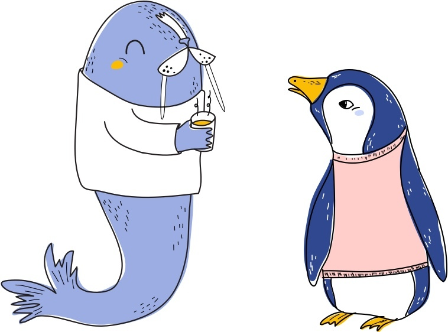

Understand, recognize and develop your people
Teambit helps temas create a high performing culture with regular feedback.
or
Traditional people processed lead to disengagement and turnover


It doesn't have to be like that. Teambit is a modern solution that teammates love.


Here is how it works

Feedback to help teammates improve
Empower your teammates to know in real time what they are doing well and what they need to improve.
Learn more Survey to help the team be better
Get real-time insights into your team with research-backed, lightweight and regular surveys.
Learn more


Reviews to help teammates get a fair evaluation
Make better compensation and promotion decisions with objective and quick performance reviews.
Learn more
Praise to help teammate fell valued
Make it a habit to recognize and praise people who do great work.
Learn more
See Teambit for yourself.
Get started in seconds
We are experiencing what Gallup calls'an employee engagement crisis'. Just one-third of people at work are engaged
To improve performance and engagement companies rely on the same principles as industrial-age factories. But all those annual performance reviews and hundred.question surveys don't work anymore. People want regular feedback. Leaders who don't embrance this change end up with misaligned, disengaged and dwiling team.
We designed Teambit to change that. It empowers teams to make feedback a daily habit. Everybody knows what they are doing well and what they need to improve, leading to better performing, engaged and happier teams.
We are on a mission to make worklife exciting.Come join us.


Alex and Bohdan
Co-Founders at Teambit